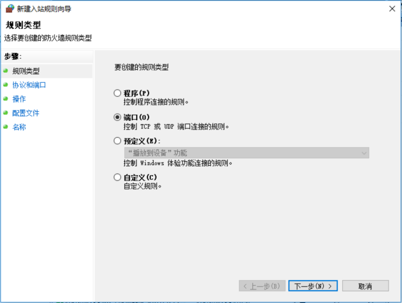

在 Windows 平台搭建 gogs 服务
Sun 11 June 2017 by Little Captain准备
Git 安装包
nssm Windows Windows 服务包装软件
gogs 二进制包
安装
Git
一直下一步就可以了
nssm
这个不用安装, 解压后, 根据系统使用不同的程序. 要能够在命令行中使用, 必须要将它的路径加入环境变量中
gogs
将压缩包解压, 然后启动 nssm 程序来包装 gogs, 包装流程参见.
防火墙配置
- 不配置好防火墙, 本机外是没法访问的.
启动或关闭 Windows 防火墙

高级设置

剩下的就是打开浏览器, 访问 gogs 服务了!
注意
我们在 clone 时, 需要输入密码, 以后可能还要输入, 解决方案有两个, 这两个其实就是一个
方案1
# 这样以后任何时候都不会再叫你输入账号密码了
git clone http://用户名:密码@仓库地址
方案2
这个方案是在没有采用方案1的情况下的不就方案. 打开.git目录下config文件, 将url替换为方案1采用的形式即可